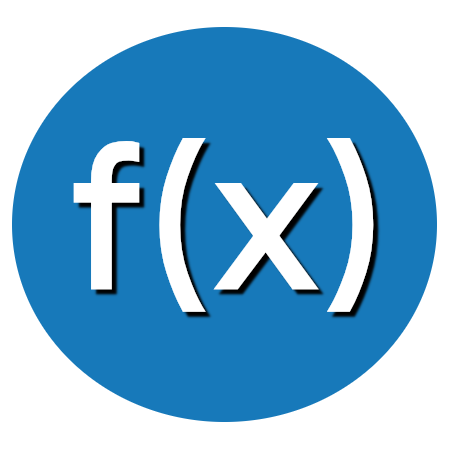

Home
Teoria
Encontrar Gráfico
Encontrar Função
Alto contraste
Velocidade de reprodução:
Aprender a como encontrar uma função a partir de seu gráfico
Está em dúvida? Confira a nossa
teoria
interativa!
Digite um de seus pontos:
Digite um outro ponto: